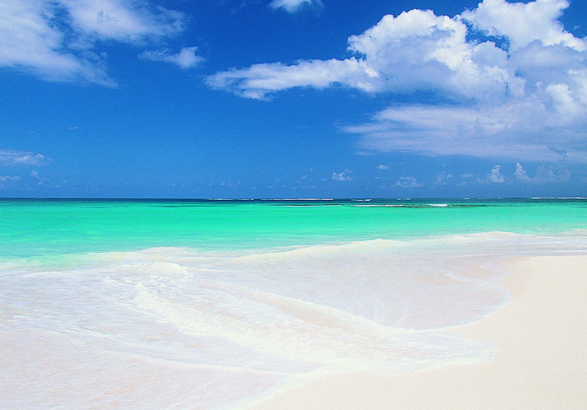

Oceanic Islands brings together Indian Ocean marine reserves, sandbars and conservation areas along the Swahili coast - from boat day trips off Dar es Salaam to Chumbe and Mnemba.
Snorkel coral gardens, picnic on uninhabited sandbars and explore protected reefs where sea turtles, reef fish and dolphins thrive along the Swahili coast.
Dar es Salaam Marine Reserves

Mbudya Island Marine Reserve
The island lies close to Kunduchi fishing community and takes around 15-20 minutes motorboat ride crossing from the…

Bongoyo Island Marine Reserve
The island lies close to the Msasani Peninsula is reachable by means boat ride, it takes only 30 minutes from the…

Pangavini Island Marine Reserve
It provides protection for several important biological diversity and tropical habitats; sea grass beds,

Fungu Yasin Sand Bar
Coral reefs are found on the western and eastern side of the Island where more than 35% of coral cover is located on…
Coastal Reef Sanctuaries

Maziwe Island Marine Reserve
Maziwe / Maziwi Island is one of the oldest Marine Reserve in Tanzania which located about 15 miles from the cost of…

Kirui Island Marine Reserve
Kirui Island's eastern side is completely covered in coral reefs. In general, seagrass beds rule Moa Bay,

Kwale Island Marine Reserve
Kwale Island was historically inhabited by tribe of Wadiko, people living along the beaches.

Sinda Island Marine Reserve
In Sinda, the maximum depth is less than 10 m. Seawards of the reserves,

Toten Island
There are also ruins of two mosques and German tombs of the turn of 19th century,

Ulenge Island Marine Reserve
The first people to live in Ulenge Island were the Swahili people from North who were lead by Chief Mwinyi Ulenge.

Yambe Island
Discover Yambe Island - tailored safari days and local highlights with Safari and Bush Retreats.

Mwewe Island Marine Reserve
Discover Mwewe Island Marine Reserve - tailored safari days and local highlights with Safari and Bush Retreats.
Zanzibar Marine Parks

Safari Packages

Bongoyo Island Day Trip
From $638 / person
Bongoyo, a much-loved island getaway, lies off the Msasani Peninsula, about 2.5km north of Dar es Salaam. Idyllic white-sand beaches with thatched umbrellas, crystal clear waters t
View Itinerary
Mbudya Island Day Trip
From $638 / person
Escape the hustle and bustle of downtown Dar es Salaam. A 15-minute motorboat ride from the mainland will take you to the idyllic island paradise of Mbudya Island in the Dar es Sal
View Itinerary
Chumbe Island Coral Park
Price on request
Chumbe Island Coral Park Ltd. (CHICOP) is an award-winning private nature reserve that was developed from 1991 for the conservation and sustainable management of uninhabited Chumbe
View Itinerary
Nungwi Experience
Price on request
Nungwi, Matemwe and Kendwa are the name of the villages at the north-east part of Zanzibar Island. This part of the trip mainly focuses on snorkeling experience at Mnemba Atoll and
View ItineraryReady to explore the Oceanic Islands?
Request a Quote